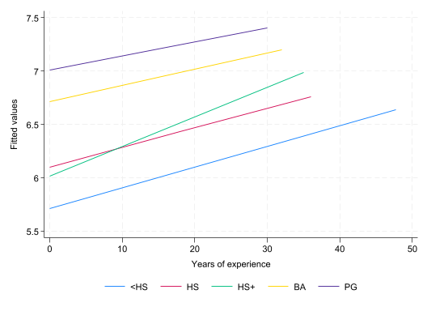

Problem Set 4 (SOLUTIONS)
This problem set will revisit some of the material covered in Handouts 3 and 4. You will be required to work with a ‘raw’ dataset, downloaded from an online repository. For this reason, you should take care to check how the data is coded.
You will be using a version of the US Current Population Survey (CPS) called the Merged Outgoing Rotation Group (MORG). This data is compiled by the National Bureau of Economic Research (NBER) and has been used in many famous studies of the US economy. The CPS has a rather unique rotating panel design: “The monthly CPS is a rotating panel design; households are interviewed for four consecutive months, are not in the sample for the next eight months, and then are interviewed for four more consecutive months.” (source: IPUMS). The NBER’s MORG keeps only the outgoing rotation group’s observations.
The MORG .dta files can be found at: https://data.nber.org/morg/annual/.
Preamble
Create a do-file for this problem set and include a preamble that sets the directory and opens the data directly from the NBER website. Of course, this requires a good internet connection. For example,
clear
//or, to remove all stored values (including macros, matrices, scalars, etc.)
*clear all
* Replace $rootdir with the relevant path to on your local harddrive.
cd "$rootdir/problem-sets/ps-4"
cap log close
log using problem-set-4-log.txt, replace
use "https://data.nber.org/morg/annual/morg19.dta", clearYou can, of course, download the data and open it locally on your computer.
Questions
1. Create a new variable exper equal to age minus (years of education + 6). This is referred to as potential years of experience. Check how each variable defines missing values before proceeding. You will need to create a years of education variable for this. Here is he the suggested code:
tab grade92, m
gen eduyrs = .
replace eduyrs = .3 if grade92==31
replace eduyrs = 3.2 if grade92==32
replace eduyrs = 7.2 if grade92==33
replace eduyrs = 7.2 if grade92==34
replace eduyrs = 9 if grade92==35
replace eduyrs = 10 if grade92==36
replace eduyrs = 11 if grade92==37
replace eduyrs = 12 if grade92==38
replace eduyrs = 12 if grade92==39
replace eduyrs = 13 if grade92==40
replace eduyrs = 14 if grade92==41
replace eduyrs = 14 if grade92==42
replace eduyrs = 16 if grade92==43
replace eduyrs = 18 if grade92==44
replace eduyrs = 18 if grade92==45
replace eduyrs = 18 if grade92==46
lab var eduyrs "completed education"
tab grade92, sum(eduyrs)
Highest |
grade |
completed | Freq. Percent Cum.
------------+-----------------------------------
31 | 814 0.28 0.28
32 | 1,495 0.51 0.79
33 | 3,071 1.05 1.85
34 | 4,123 1.41 3.26
35 | 5,244 1.80 5.06
36 | 7,824 2.69 7.75
37 | 9,271 3.18 10.93
38 | 4,226 1.45 12.38
39 | 82,795 28.41 40.79
40 | 50,112 17.20 57.99
41 | 12,392 4.25 62.24
42 | 16,161 5.55 67.79
43 | 59,438 20.40 88.19
44 | 25,374 8.71 96.89
45 | 3,785 1.30 98.19
46 | 5,265 1.81 100.00
------------+-----------------------------------
Total | 291,390 100.00
(291,390 missing values generated)
(814 real changes made)
(1,495 real changes made)
(3,071 real changes made)
(4,123 real changes made)
(5,244 real changes made)
(7,824 real changes made)
(9,271 real changes made)
(4,226 real changes made)
(82,795 real changes made)
(50,112 real changes made)
(12,392 real changes made)
(16,161 real changes made)
(59,438 real changes made)
(25,374 real changes made)
(3,785 real changes made)
(5,265 real changes made)
Highest |
grade | Summary of completed education
completed | Mean Std. dev. Freq.
------------+------------------------------------
31 | .30000001 0 814
32 | 3.2 0 1,495
33 | 7.1999998 0 3,071
34 | 7.1999998 0 4,123
35 | 9 0 5,244
36 | 10 0 7,824
37 | 11 0 9,271
38 | 12 0 4,226
39 | 12 0 82,795
40 | 13 0 50,112
41 | 14 0 12,392
42 | 14 0 16,161
43 | 16 0 59,438
44 | 18 0 25,374
45 | 18 0 3,785
46 | 18 0 5,265
------------+------------------------------------
Total | 13.556855 2.7030576 291,390tab age, m
gen exper = age-(eduyrs+6)
Age | Freq. Percent Cum.
------------+-----------------------------------
16 | 4,661 1.60 1.60
17 | 4,630 1.59 3.19
18 | 4,417 1.52 4.70
19 | 4,039 1.39 6.09
20 | 3,915 1.34 7.43
21 | 3,996 1.37 8.81
22 | 3,918 1.34 10.15
23 | 3,950 1.36 11.51
24 | 4,194 1.44 12.94
25 | 4,185 1.44 14.38
26 | 4,325 1.48 15.87
27 | 4,476 1.54 17.40
28 | 4,600 1.58 18.98
29 | 4,633 1.59 20.57
30 | 4,829 1.66 22.23
31 | 4,735 1.62 23.85
32 | 4,601 1.58 25.43
33 | 4,748 1.63 27.06
34 | 4,646 1.59 28.66
35 | 4,730 1.62 30.28
36 | 4,742 1.63 31.91
37 | 4,848 1.66 33.57
38 | 4,550 1.56 35.13
39 | 4,735 1.62 36.76
40 | 4,667 1.60 38.36
41 | 4,503 1.55 39.90
42 | 4,390 1.51 41.41
43 | 4,309 1.48 42.89
44 | 4,193 1.44 44.33
45 | 4,253 1.46 45.79
46 | 4,266 1.46 47.25
47 | 4,447 1.53 48.78
48 | 4,563 1.57 50.34
49 | 4,698 1.61 51.96
50 | 4,646 1.59 53.55
51 | 4,477 1.54 55.09
52 | 4,555 1.56 56.65
53 | 4,523 1.55 58.20
54 | 4,736 1.63 59.83
55 | 5,010 1.72 61.55
56 | 5,035 1.73 63.27
57 | 4,976 1.71 64.98
58 | 5,030 1.73 66.71
59 | 5,066 1.74 68.45
60 | 5,124 1.76 70.20
61 | 5,067 1.74 71.94
62 | 5,035 1.73 73.67
63 | 4,927 1.69 75.36
64 | 4,892 1.68 77.04
65 | 4,554 1.56 78.60
66 | 4,526 1.55 80.16
67 | 4,344 1.49 81.65
68 | 4,328 1.49 83.13
69 | 4,100 1.41 84.54
70 | 4,058 1.39 85.93
71 | 4,008 1.38 87.31
72 | 3,897 1.34 88.65
73 | 3,147 1.08 89.73
74 | 2,815 0.97 90.69
75 | 2,809 0.96 91.66
76 | 2,623 0.90 92.56
77 | 2,373 0.81 93.37
78 | 2,201 0.76 94.13
79 | 1,977 0.68 94.80
80 | 7,799 2.68 97.48
85 | 7,340 2.52 100.00
------------+-----------------------------------
Total | 291,390 100.002. Keep only those between the ages of 18 and 54. Check the distribution of `exper’ and replace any negative values to 0.
keep if inrange(age,18,54)
sum exper, det
replace exper=0 if exper<0(126,352 observations deleted)
exper
-------------------------------------------------------------
Percentiles Smallest
1% 0 -6
5% 1 -5
10% 2 -4 Obs 165,038
25% 7 -4 Sum of wgt. 165,038
50% 16 Mean 16.50623
Largest Std. dev. 10.57401
75% 25 47.7
90% 31 47.7 Variance 111.8097
95% 34 47.7 Skewness .1296908
99% 36 47.7 Kurtosis 1.887811
(1,078 real changes made)3. Create a categorical variable that takes on 4 values: 1 “less than High School”; 2 “High School Diploma”; 3 “some Higher Education”; 4 “Bachelors”; 5 “Postgraduate”. This variable should be based on the the grade921 variable. You can find the value labels for this variable in this document: <https://data.nber.org/morg/docs/cpsx.pdf>. I suggest using therecodecommand, which allows you to create value labels while assigning values. Check the distributio ofexper` by education category.
recode grade92 (31/38 = 1 "<HS") (39 = 2 "HS") (40/42 = 3 "HS+") (43 = 4 "BA") (44/46 = 5 "PG"), gen(educat)
tab grade92 educat, m
tab educat, sum(exper)(165,038 differences between grade92 and educat)
Highest |
grade | RECODE of grade92 (Highest grade completed)
completed | <HS HS HS+ BA PG | Total
-----------+-------------------------------------------------------+----------
31 | 398 0 0 0 0 | 398
32 | 578 0 0 0 0 | 578
33 | 1,515 0 0 0 0 | 1,515
34 | 1,571 0 0 0 0 | 1,571
35 | 1,971 0 0 0 0 | 1,971
36 | 2,198 0 0 0 0 | 2,198
37 | 4,373 0 0 0 0 | 4,373
38 | 2,440 0 0 0 0 | 2,440
39 | 0 45,013 0 0 0 | 45,013
40 | 0 0 30,934 0 0 | 30,934
41 | 0 0 7,154 0 0 | 7,154
42 | 0 0 9,708 0 0 | 9,708
43 | 0 0 0 37,557 0 | 37,557
44 | 0 0 0 0 14,804 | 14,804
45 | 0 0 0 0 2,021 | 2,021
46 | 0 0 0 0 2,803 | 2,803
-----------+-------------------------------------------------------+----------
Total | 15,044 45,013 47,796 37,557 19,628 | 165,038
RECODE of |
grade92 |
(Highest |
grade | Summary of exper
completed) | Mean Std. dev. Freq.
------------+------------------------------------
<HS | 19.29665 12.82301 15,044
HS | 17.726435 11.044222 45,013
HS+ | 15.643589 10.806949 47,796
BA | 15.376841 9.3440749 37,557
PG | 15.900092 8.1569821 19,628
------------+------------------------------------
Total | 16.514468 10.560511 165,0384. Create the variable lnwage equal to the (natural) log of weekly earnings. Create a figure that shows the predicted linear fit of lwage against exper, by educat. Try to place all 5 fitted lines in the same graph.
gen lnwage = ln(earnwke)
twoway (lfit lnwage exper if educat==1) (lfit lnwage exper if educat==2) (lfit lnwage exper if educat==3) (lfit lnwage exper if educat==4) (lfit lnwage exper if educat==5) , legend(order(1 "<HS" 2 "HS" 3 "HS+" 4 "BA" 5 "PG") pos(6) r(1)) xtitle(Years of experience) (49,686 missing values generated)
5. Estimate a linear regression model that allows the slope coefficient on exper and constant term to vary by education category (educat). Let the base (excluded) education category be 2 “High School diploma”.
\[ \ln(Wage_i) = \alpha + \sum_{j\neq2}\psi_j \mathbf{1}\{Educat_i=j\} + \beta Exper_i + \sum_{j\neq2}\gamma_j Exper_i\times\mathbf{1}\{Educat_i=j\}+\upsilon_i \]
reg lnwage ib2.educat##c.exper
Source | SS df MS Number of obs = 115,352
-------------+---------------------------------- F(9, 115342) = 4039.95
Model | 17435.5509 9 1937.28343 Prob > F = 0.0000
Residual | 55310.0589 115,342 .479530951 R-squared = 0.2397
-------------+---------------------------------- Adj R-squared = 0.2396
Total | 72745.6098 115,351 .63064568 Root MSE = .69248
------------------------------------------------------------------------------
lnwage | Coefficient Std. err. t P>|t| [95% conf. interval]
-------------+----------------------------------------------------------------
educat |
<HS | -.3882762 .0178644 -21.73 0.000 -.4232902 -.3532622
HS+ | -.0839435 .0104229 -8.05 0.000 -.1043722 -.0635149
BA | .6145964 .0109763 55.99 0.000 .5930831 .6361097
PG | .9055692 .0141961 63.79 0.000 .877745 .9333933
|
exper | .0182621 .0003709 49.24 0.000 .0175351 .0189891
|
educat#|
c.exper |
<HS | .001037 .0007627 1.36 0.174 -.000458 .0025319
HS+ | .0095156 .0005186 18.35 0.000 .0084991 .0105321
BA | -.0032067 .0005743 -5.58 0.000 -.0043324 -.0020811
PG | -.0051215 .0007698 -6.65 0.000 -.0066302 -.0036128
|
_cons | 6.101809 .0077485 787.48 0.000 6.086622 6.116996
------------------------------------------------------------------------------6. Show that after 13 years of experience, those with some Higer Education (but no Bachelors), out earn those with just a high school diploma. You can assume that there are is a 2 year difference between the experience (education).
dis _b[exper]*14
dis (_b[exper] + _b[3.educat#exper])*12 + _b[3.educat]
dis _b[exper]*15
dis (_b[exper] + _b[3.educat#exper])*13 + _b[3.educat].25566943
.24938901
.27393153
.277166727. Use the post-estimation test command to test the null hypothesis: \(H_0: 15\beta = 13(\beta+\gamma_3)+\psi_3\).
test exper*15 = (exper+3.educat#exper)*13+3.educat
( 1) - 3.educat + 2*exper - 13*3.educat#c.exper = 0
F( 1,115342) = 0.32
Prob > F = 0.57348. Estimate a transformed version of the above model allowing you to test the above hypothesis using the coefficient from a single regressor. That is, the resulting test should be a simple t-test of \(H_0: \phi=0\), where \(\phi\) is the coefficient on the interaction of exper and a dummy variable for educat=3. This will be easier to do if you estimate the model using only the relevant sample: those with High School diplomas and some Higher Education. I suggest avoiding the use of factor notation to create the dummy variables and interaction terms for this exercise. For example, the following should replicate the relevant coefficients from Q5.
gen hasHE = educat==3 if inlist(educat,2,3)
gen hasHEexp = hasHE*exper
reg lnwage exper hasHE hasHEexp(72,229 missing values generated)
(72,229 missing values generated)
Source | SS df MS Number of obs = 62,811
-------------+---------------------------------- F(3, 62807) = 2860.46
Model | 4000.16053 3 1333.38684 Prob > F = 0.0000
Residual | 29277.0845 62,807 .466143655 R-squared = 0.1202
-------------+---------------------------------- Adj R-squared = 0.1202
Total | 33277.2451 62,810 .529808073 Root MSE = .68275
------------------------------------------------------------------------------
lnwage | Coefficient Std. err. t P>|t| [95% conf. interval]
-------------+----------------------------------------------------------------
exper | .0182621 .0003657 49.94 0.000 .0175453 .0189789
hasHE | -.0839435 .0102764 -8.17 0.000 -.1040852 -.0638019
hasHEexp | .0095156 .0005113 18.61 0.000 .0085134 .0105178
_cons | 6.101809 .0076396 798.71 0.000 6.086835 6.116782
------------------------------------------------------------------------------gen experR = exper+hasHEexp*2/13
gen hasHER = hasHE-hasHEexp/13
reg lnwage experR hasHER hasHEexp(72,229 missing values generated)
(72,229 missing values generated)
Source | SS df MS Number of obs = 62,811
-------------+---------------------------------- F(3, 62807) = 2860.46
Model | 4000.16052 3 1333.38684 Prob > F = 0.0000
Residual | 29277.0845 62,807 .466143655 R-squared = 0.1202
-------------+---------------------------------- Adj R-squared = 0.1202
Total | 33277.2451 62,810 .529808073 Root MSE = .68275
------------------------------------------------------------------------------
lnwage | Coefficient Std. err. t P>|t| [95% conf. interval]
-------------+----------------------------------------------------------------
experR | .0182621 .0003657 49.94 0.000 .0175453 .0189789
hasHER | -.0839435 .0102764 -8.17 0.000 -.1040852 -.0638019
hasHEexp | .0002489 .0004358 0.57 0.568 -.0006053 .001103
_cons | 6.101809 .0076396 798.71 0.000 6.086835 6.116782
------------------------------------------------------------------------------9. Verify that the F-statistic from Q7 is the square of the above T-statistic.
dis (_b[hasHEexp]/_se[hasHEexp])^2.3261014310. Use the restricted OLS approach to replicate the F-statistic and p-value from Q7.
reg lnwage exper hasHE hasHEexp
scalar RSSu = e(rss)
scalar DOFu = e(df_r)
reg lnwage experR hasHER
scalar RSSr = e(rss)
scalar DOFr = e(df_r)
scalar Fstat = ((RSSr-RSSu)/(DOFr-DOFu))/(RSSu/DOFu)
scalar pval = Ftail(1,DOFu,Fstat)
scalar list Fstat pval
Source | SS df MS Number of obs = 62,811
-------------+---------------------------------- F(3, 62807) = 2860.46
Model | 4000.16053 3 1333.38684 Prob > F = 0.0000
Residual | 29277.0845 62,807 .466143655 R-squared = 0.1202
-------------+---------------------------------- Adj R-squared = 0.1202
Total | 33277.2451 62,810 .529808073 Root MSE = .68275
------------------------------------------------------------------------------
lnwage | Coefficient Std. err. t P>|t| [95% conf. interval]
-------------+----------------------------------------------------------------
exper | .0182621 .0003657 49.94 0.000 .0175453 .0189789
hasHE | -.0839435 .0102764 -8.17 0.000 -.1040852 -.0638019
hasHEexp | .0095156 .0005113 18.61 0.000 .0085134 .0105178
_cons | 6.101809 .0076396 798.71 0.000 6.086835 6.116782
------------------------------------------------------------------------------
Source | SS df MS Number of obs = 62,811
-------------+---------------------------------- F(2, 62808) = 4290.58
Model | 4000.00851 2 2000.00425 Prob > F = 0.0000
Residual | 29277.2366 62,808 .466138654 R-squared = 0.1202
-------------+---------------------------------- Adj R-squared = 0.1202
Total | 33277.2451 62,810 .529808073 Root MSE = .68274
------------------------------------------------------------------------------
lnwage | Coefficient Std. err. t P>|t| [95% conf. interval]
-------------+----------------------------------------------------------------
experR | .0182233 .0003593 50.71 0.000 .017519 .0189277
hasHER | -.0882792 .0069253 -12.75 0.000 -.1018527 -.0747056
_cons | 6.104077 .0065255 935.42 0.000 6.091287 6.116867
------------------------------------------------------------------------------
Fstat = .32612066
pval = .567954411. Use the restricted OLS approach to test the following hypothesis corresponding to the model in Q5:
\[
H_0: \gamma_j = 0\qquad \text{for}\quad j=1,3,4,5
\] Compute the F-statistic and p-value. Verify your result using the post-estimation test command.
reg lnwage ib2.educat##c.exper
scalar RSSu = e(rss)
scalar DOFu = e(df_r)
reg lnwage ib2.educat exper
scalar RSSr = e(rss)
scalar DOFr = e(df_r)
scalar Fstat = ((RSSr-RSSu)/(DOFr-DOFu))/(RSSu/DOFu)
scalar pval = Ftail(DOFr-DOFu,DOFu,Fstat)
scalar list Fstat pval
** verify
reg lnwage ib2.educat##c.exper
test 1.educat#exper 3.educat#exper 4.educat#exper 5.educat#exper
Source | SS df MS Number of obs = 115,352
-------------+---------------------------------- F(9, 115342) = 4039.95
Model | 17435.5509 9 1937.28343 Prob > F = 0.0000
Residual | 55310.0589 115,342 .479530951 R-squared = 0.2397
-------------+---------------------------------- Adj R-squared = 0.2396
Total | 72745.6098 115,351 .63064568 Root MSE = .69248
------------------------------------------------------------------------------
lnwage | Coefficient Std. err. t P>|t| [95% conf. interval]
-------------+----------------------------------------------------------------
educat |
<HS | -.3882762 .0178644 -21.73 0.000 -.4232902 -.3532622
HS+ | -.0839435 .0104229 -8.05 0.000 -.1043722 -.0635149
BA | .6145964 .0109763 55.99 0.000 .5930831 .6361097
PG | .9055692 .0141961 63.79 0.000 .877745 .9333933
|
exper | .0182621 .0003709 49.24 0.000 .0175351 .0189891
|
educat#|
c.exper |
<HS | .001037 .0007627 1.36 0.174 -.000458 .0025319
HS+ | .0095156 .0005186 18.35 0.000 .0084991 .0105321
BA | -.0032067 .0005743 -5.58 0.000 -.0043324 -.0020811
PG | -.0051215 .0007698 -6.65 0.000 -.0066302 -.0036128
|
_cons | 6.101809 .0077485 787.48 0.000 6.086622 6.116996
------------------------------------------------------------------------------
Source | SS df MS Number of obs = 115,352
-------------+---------------------------------- F(5, 115346) = 7085.67
Model | 17093.4651 5 3418.69301 Prob > F = 0.0000
Residual | 55652.1448 115,346 .482480058 R-squared = 0.2350
-------------+---------------------------------- Adj R-squared = 0.2349
Total | 72745.6098 115,351 .63064568 Root MSE = .69461
------------------------------------------------------------------------------
lnwage | Coefficient Std. err. t P>|t| [95% conf. interval]
-------------+----------------------------------------------------------------
educat |
<HS | -.3724213 .0090073 -41.35 0.000 -.3900754 -.3547671
HS+ | .0726614 .0055618 13.06 0.000 .0617604 .0835624
BA | .5714202 .0057563 99.27 0.000 .5601379 .5827025
PG | .8295498 .0068114 121.79 0.000 .8161996 .8428999
|
exper | .0201711 .0002025 99.60 0.000 .0197742 .0205681
_cons | 6.067685 .0054116 1121.24 0.000 6.057079 6.078292
------------------------------------------------------------------------------
Fstat = 178.34399
pval = 1.32e-152
Source | SS df MS Number of obs = 115,352
-------------+---------------------------------- F(9, 115342) = 4039.95
Model | 17435.5509 9 1937.28343 Prob > F = 0.0000
Residual | 55310.0589 115,342 .479530951 R-squared = 0.2397
-------------+---------------------------------- Adj R-squared = 0.2396
Total | 72745.6098 115,351 .63064568 Root MSE = .69248
------------------------------------------------------------------------------
lnwage | Coefficient Std. err. t P>|t| [95% conf. interval]
-------------+----------------------------------------------------------------
educat |
<HS | -.3882762 .0178644 -21.73 0.000 -.4232902 -.3532622
HS+ | -.0839435 .0104229 -8.05 0.000 -.1043722 -.0635149
BA | .6145964 .0109763 55.99 0.000 .5930831 .6361097
PG | .9055692 .0141961 63.79 0.000 .877745 .9333933
|
exper | .0182621 .0003709 49.24 0.000 .0175351 .0189891
|
educat#|
c.exper |
<HS | .001037 .0007627 1.36 0.174 -.000458 .0025319
HS+ | .0095156 .0005186 18.35 0.000 .0084991 .0105321
BA | -.0032067 .0005743 -5.58 0.000 -.0043324 -.0020811
PG | -.0051215 .0007698 -6.65 0.000 -.0066302 -.0036128
|
_cons | 6.101809 .0077485 787.48 0.000 6.086622 6.116996
------------------------------------------------------------------------------
( 1) 1.educat#c.exper = 0
( 2) 3.educat#c.exper = 0
( 3) 4.educat#c.exper = 0
( 4) 5.educat#c.exper = 0
F( 4,115342) = 178.34
Prob > F = 0.000012. Compute the relevant Chi-squared distributed test statistic and corresponding p-value for the above test, assuming \(n\) is large (enough).
scalar Cstat = Fstat*(DOFr-DOFu)
scalar pval = chi2tail(DOFr-DOFu,Cstat)
scalar list Cstat pval Cstat = 713.37597
pval = 4.42e-15313. Using the data from Problem Set 2, estimate the simple linear regression model using OLS,
\[ \ln(Wage_i) = \beta_0 + \beta_1 Educ_i + \beta_2 Female_i + \varepsilon_i \]
use "$rootdir/problem-sets/ps-2/problem-set-2-data.dta", clear
reg lwage educ female
est sto ols
estadd scalar sigma = e(rmse)(PSID wage data 1976-82 from Baltagi and Khanti-Akom (1990))
Source | SS df MS Number of obs = 4,165
-------------+---------------------------------- F(2, 4162) = 732.99
Model | 231.021419 2 115.51071 Prob > F = 0.0000
Residual | 655.883483 4,162 .157588535 R-squared = 0.2605
-------------+---------------------------------- Adj R-squared = 0.2601
Total | 886.904902 4,164 .212993492 Root MSE = .39697
------------------------------------------------------------------------------
lwage | Coefficient Std. err. t P>|t| [95% conf. interval]
-------------+----------------------------------------------------------------
educ | .0651382 .0022066 29.52 0.000 .0608121 .0694642
female | -.4737645 .0194589 -24.35 0.000 -.5119143 -.4356147
_cons | 5.89297 .0290891 202.58 0.000 5.83594 5.95
------------------------------------------------------------------------------
added scalar:
e(sigma) = .3969742214. Estimate the Mincer equation using Maximum Likelihood. Take a look at https://www.stata.com/manuals13/rmlexp.pdf, the documentation for the mlexp command. It has a discussion on estimating the CLRM using ML.1
mlexp (ln(normalden(lwage, {xb: educ female _cons}, exp({theta}))))
ereturn list
nlcom (sigma: exp(_b[/theta]))
estadd scalar sigma = r(b)[1,1]
eststo ml
Initial: Log likelihood = -97095.356
Alternative: Log likelihood = -35297.969
Rescale: Log likelihood = -12999.606
Rescale eq: Log likelihood = -7350.6222
Iteration 0: Log likelihood = -7350.6222 (not concave)
Iteration 1: Log likelihood = -3936.054
Iteration 2: Log likelihood = -2187.1092 (backed up)
Iteration 3: Log likelihood = -2073.0429
Iteration 4: Log likelihood = -2060.4271
Iteration 5: Log likelihood = -2060.4019
Iteration 6: Log likelihood = -2060.4019
Maximum likelihood estimation
Log likelihood = -2060.4019 Number of obs = 4,165
------------------------------------------------------------------------------
| Coefficient Std. err. z P>|z| [95% conf. interval]
-------------+----------------------------------------------------------------
xb |
educ | .0651382 .0022058 29.53 0.000 .060815 .0694614
female | -.4737645 .0194519 -24.36 0.000 -.5118895 -.4356396
_cons | 5.89297 .0290786 202.66 0.000 5.835977 5.949963
-------------+----------------------------------------------------------------
/theta | -.9242442 .0109566 -84.35 0.000 -.9457188 -.9027696
------------------------------------------------------------------------------
scalars:
e(rank) = 4
e(N) = 4165
e(ic) = 6
e(k) = 4
e(k_eq) = 2
e(converged) = 1
e(rc) = 0
e(ll) = -2060.40189888505
e(k_aux) = 1
e(df_m) = 4
e(k_eq_model) = 0
macros:
e(cmdline) : "mlexp (ln(normalden(lwage, {xb: educ female _cons.."
e(cmd) : "mlexp"
e(predict) : "mlexp_p"
e(estat_cmd) : "mlexp_estat"
e(marginsnotok) : "SCores"
e(marginsok) : "default xb"
e(marginsprop) : "nochainrule"
e(lexp) : "ln(normalden(lwage,{xb:},exp({theta:})))"
e(params) : "xb:educ xb:female xb:_cons theta:_cons"
e(opt) : "moptimize"
e(vce) : "oim"
e(ml_method) : "lf0"
e(technique) : "nr"
e(properties) : "b V"
matrices:
e(b) : 1 x 4
e(V) : 4 x 4
e(init) : 1 x 4
e(ilog) : 1 x 20
e(gradient) : 1 x 4
functions:
e(sample)
sigma: exp(_b[/theta])
------------------------------------------------------------------------------
| Coefficient Std. err. z P>|z| [95% conf. interval]
-------------+----------------------------------------------------------------
sigma | .3968312 .0043479 91.27 0.000 .3883094 .405353
------------------------------------------------------------------------------
added scalar:
e(sigma) = .3968312315. Estimate the Mincer equation using Method of Moments. You can use the gmm command in Stata. Hint: the regressors will be their own instruments and use the onestep option.2
gmm (lwage - {xb: educ female _cons}), instruments(educ female) onestep
eststo mm
esttab ols ml mm, se drop(theta:_cons) scalar(N sigma) mtitle(OLS ML MM)
Step 1
Iteration 0: GMM criterion Q(b) = 44.629069
Iteration 1: GMM criterion Q(b) = 2.101e-24
Iteration 2: GMM criterion Q(b) = 1.368e-31
note: model is exactly identified.
GMM estimation
Number of parameters = 3
Number of moments = 3
Initial weight matrix: Unadjusted Number of obs = 4,165
------------------------------------------------------------------------------
| Robust
| Coefficient std. err. z P>|z| [95% conf. interval]
-------------+----------------------------------------------------------------
educ | .0651382 .0023187 28.09 0.000 .0605935 .0696828
female | -.4737645 .0177811 -26.64 0.000 -.5086148 -.4389143
_cons | 5.89297 .0300924 195.83 0.000 5.83399 5.95195
------------------------------------------------------------------------------
Instruments for equation 1: educ female _cons
------------------------------------------------------------
(1) (2) (3)
OLS ML MM
------------------------------------------------------------
main
educ 0.0651*** 0.0651*** 0.0651***
(0.00221) (0.00221) (0.00232)
female -0.474*** -0.474*** -0.474***
(0.0195) (0.0195) (0.0178)
_cons 5.893*** 5.893*** 5.893***
(0.0291) (0.0291) (0.0301)
------------------------------------------------------------
N 4165 4165 4165
sigma 0.397 0.397
------------------------------------------------------------
Standard errors in parentheses
* p<0.05, ** p<0.01, *** p<0.001Postamble
log closeFootnotes
You can also look at the following resource for a more flexible approach to ML estimation in Stata: https://www.stata.com/features/overview/maximum-likelihood-estimation/↩︎
Here is a resource on GMM in Stata: https://www.stata.com/features/overview/generalized-method-of-moments/↩︎